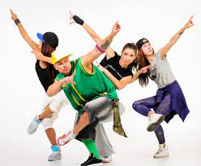
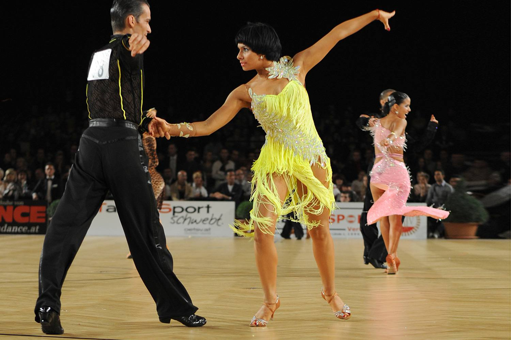
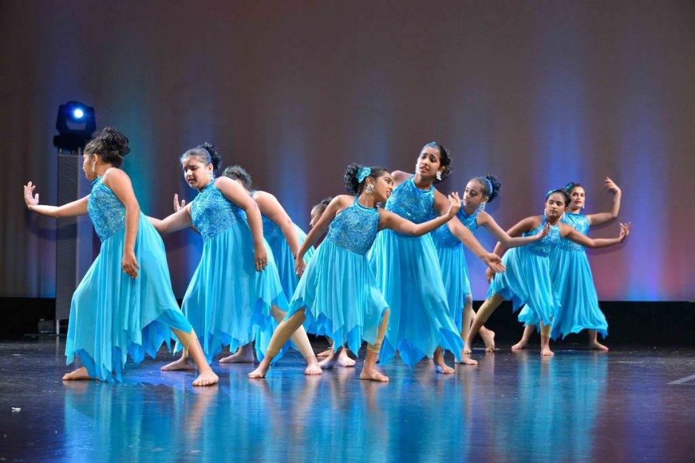
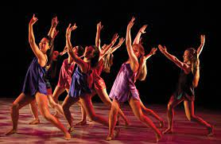
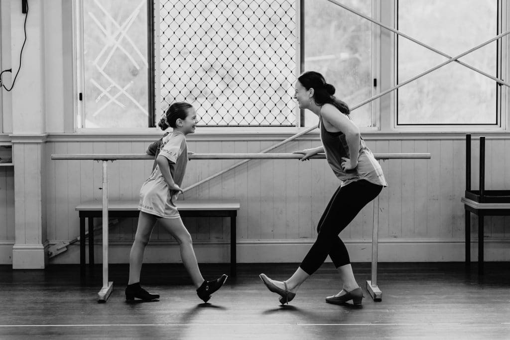
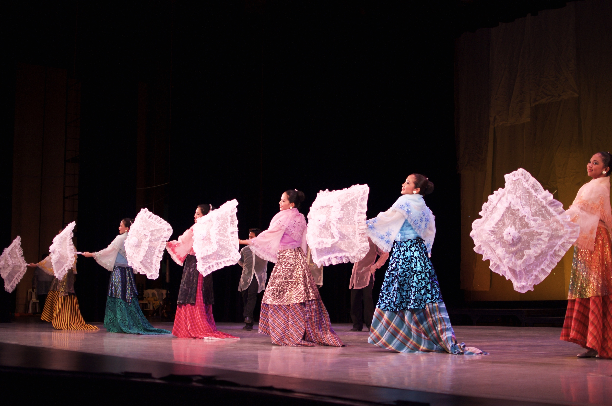
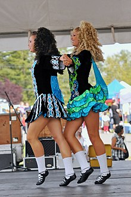
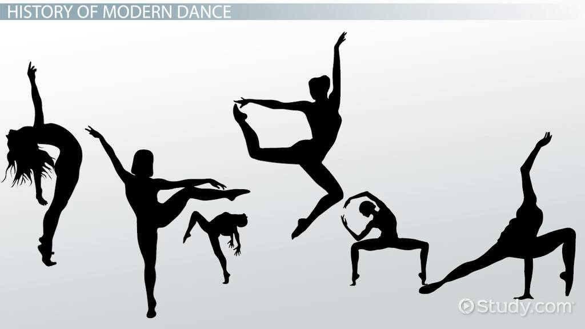
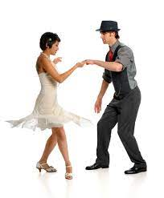

Welcome to Rookies Dance Tutorial
Welcome to Rookies Dance Tutorial! We are thrilled to have you join our vibrant community of dance enthusiasts. At Rookies Dance Tutorial, our mission is to inspire and guide individuals on their dance journey, providing a platform where creativity and passion converge. Here, you will discover a diverse range of dance styles, from contemporary to hip-hop, ensuring there's something for everyone. Our expert instructors are dedicated to breaking down dance moves, making them accessible and enjoyable for dancers of all levels. Whether you're a beginner or an experienced dancer, our tutorials offer step-by-step instructions to enhance your skills and express yourself through movement. Get ready to immerse yourself in the world of dance, where each tutorial is not just a lesson but a celebration of rhythm, expression, and joy. Join us on this exciting dance adventure, and let's dance our way to self-discovery and artistic fulfillment together! Welcome to the Rookies Dance Tutorial family!
Overview:
The Rookies Dance Tutorial is a dynamic online platform dedicated to providing a comprehensive learning experience for dance enthusiasts of all levels. Our website is designed to be a one-stop destination for individuals eager to learn and master various dance styles. From energetic hip-hop routines to the grace of contemporary dance, our expert instructors offer step-by-step tutorials that break down complex moves, ensuring accessibility for beginners and challenges for seasoned dancers.
Dance is a universal form of expression, encompassing a rich tapestry of cultural, artistic, and social significance across the globe. It serves as a powerful medium through which individuals communicate emotions, stories, and traditions. From classical ballet to contemporary hip-hop, dance manifests in diverse styles, each rooted in unique historical, geographical, and social contexts. It is an integral part of rituals, ceremonies, and celebrations, providing a means to celebrate identity and foster community cohesion. Dance is not confined to professional stages but permeates daily life, offering a dynamic outlet for personal creativity and self-expression. It is a language that transcends verbal communication, allowing individuals to convey complex narratives and emotions through movement. Dance is a vehicle for physical fitness and well-being, promoting coordination, flexibility, and cardiovascular health. It plays a pivotal role in the entertainment industry, influencing music, fashion, and popular culture. Moreover, dance education enhances cognitive abilities, instills discipline, and nurtures a deep appreciation for the arts. In essence, dance is a multifaceted art form that resonates on both an individual and collective level, contributing significantly to the human experience.
Brief History:
Dance has an extensive and diverse history, dating back to prehistoric times when early humans used movement as a form of ritualistic expression and a means of communication. Ancient civilizations, such as the Egyptians and Greeks, incorporated dance in religious ceremonies and theatrical performances, with dances often depicting mythological stories. During the Middle Ages, dance evolved in the context of courtly and folk traditions, contributing to the emergence of formalized dance styles. The Renaissance period saw the rise of court dances and the development of ballet in the European courts. In the 19th century, ballet underwent significant transformations with the influence of Romanticism and the establishment of classical techniques. Concurrently, traditional dance forms thrived in various cultures worldwide, reflecting the diversity of human expression. The 20th century witnessed a revolution in dance with the emergence of modern dance pioneers like Isadora Duncan and Martha Graham, challenging traditional forms and emphasizing freedom of movement. The mid-century brought the rise of post-modern and contemporary dance, exploring abstraction and individualism. Simultaneously, social dances such as jazz, tap, and ballroom gained popularity. The latter part of the century witnessed the fusion of dance styles in the context of globalization, breaking down cultural barriers. In recent decades, dance has continued to evolve with the integration of technology, new media, and interdisciplinary collaborations, shaping its trajectory as an ever-evolving, culturally significant art form.
"May the new year bring you warmth, love, and prosperity. May your days be filled with sunshine and your nights with sweet dreams. Happy New Year!"
"Viva Pit Senyor!!! Viva Senyor Sto. Nino"
Popular Dance Tutorials

HipHop
Hip-hop dancing refers to a range of street dances that developed in relation to hip hop music and culture. Hip-hop dancing dates back to the early 1970s in New York and California, evolving out of Funk and the development of break beat.

Ballet
Ballet dance developed during the Italian Renaissance, before evolving in France and Russia into a concert dance meant for public performance. This is in the form of a ballet, in which the dance is choreographed with classical music..

Ballroom
Ballroom dance is a type of partner dance originating at the end of the sixteenth century in France. Commonly used as shorthand for any partner dance, ballroom has today evolved into two main subgenres – standard/smooth and Latin/rhythm.

Contemporary
Developed during the mid-twentieth century, contemporary dance is now one of the most popular and technical forms of dance studied and performed professionally, especially in the US and Europe.

Jazz
Jazz dancing has its roots in seventeenth-century African traditions, brought to the Americas via the Atlantic slave trade as slaves continued dancing traditions in Brazil, the US and elsewhere on the continents.

Tap Dancing
Tap dancing is a type of percussive dance characterised by the “tap” of shoes hitting the floor as the person dances. Tap dancers often wear metal “taps” on the heel and toe of a shoe to accentuate the sound.

Folk Dance
Folk dancing is celebrated worldwide with people of different cultures and religions using various forms of folk dance to portray emotions, stories, historical events or even aspects of daily life..

Irish Dance
Originating in Ireland, this form of traditional dance has been popular for hundreds of years amongst Irish people and other countries worldwide. Popularised by shows such as Riverdance, Irish dancing is famously known for its fabulous display of footwork and dance formations.

Modern Dance
Considered as being a broad genre of dance, modern dance primarily arose from western countries such as the USA and Germany during the late 1900s. While most forms of dance are structured and feature set steps, the purpose of modern dance is to rely on the dancer’s interpretation of the music and feeling to guide movements.

Swing
Swing is a variation of jazz dance which developed between the 1920s to the 1940s as a response to the growing popularity of swing jazz in America. With the evolution of music that occurred during the Jazz era, dance also began to change with the likes of swing music encouraging faster, more rigorous movements.
Schedules:
Schedules of Dance Tutorials
| Days |
Types of Dance |
Time |
| Monday |
Ballet |
8:00 am to 12:00 nn |
| Monday |
Ballroom Dance |
1:00 pm to 4:00 pm |
| Tuesday |
Contemporary Dance |
8:00 am to 12:00 nn |
| Tuesday |
Jazz Dance |
1:00 pm to 4:00 pm |
| Wednesday |
Hiphop |
8:00 am to 12:00 nn |
| Wednesday |
Folk Dance |
1:00 pm to 4:00 pm |
| Thursday |
Tap Dancing |
8:00 am to 12:00 nn |
| Thursday |
Modern Dance |
1:00 pm to 4:00 pm |
| Friday |
Irish Dance |
8:00 am to 12:00 nn |
| Friday |
Swing |
1:00 pm to 4:00 pm |
Reminders:
Because Sinulog is fast approaching, Starting January 13, 2024, We will Practice for upcoming Sinulog Grand Parade at SRP on January 21, 2024 (Sunday).
No Dance Training Schedule will happen starting tomorrow, January 13, 2024, Dance Training Schedule will resume on January 23, 2024 (Tuesday).
No Dance Training Schedule on January 22, 2024 (Monday), Rest Day after Sinulog 2024.
Stay Safe, Have a Nice Day and Enjoy your Sinulog Experience. "Viva Pit Senyor guys"
Instructors:
Ms. Shine A. Barcial - Morning Schedule @8am to 12nn
Ms. Shane A. Barcial - Afternoon Schedule @1pm to 4pm